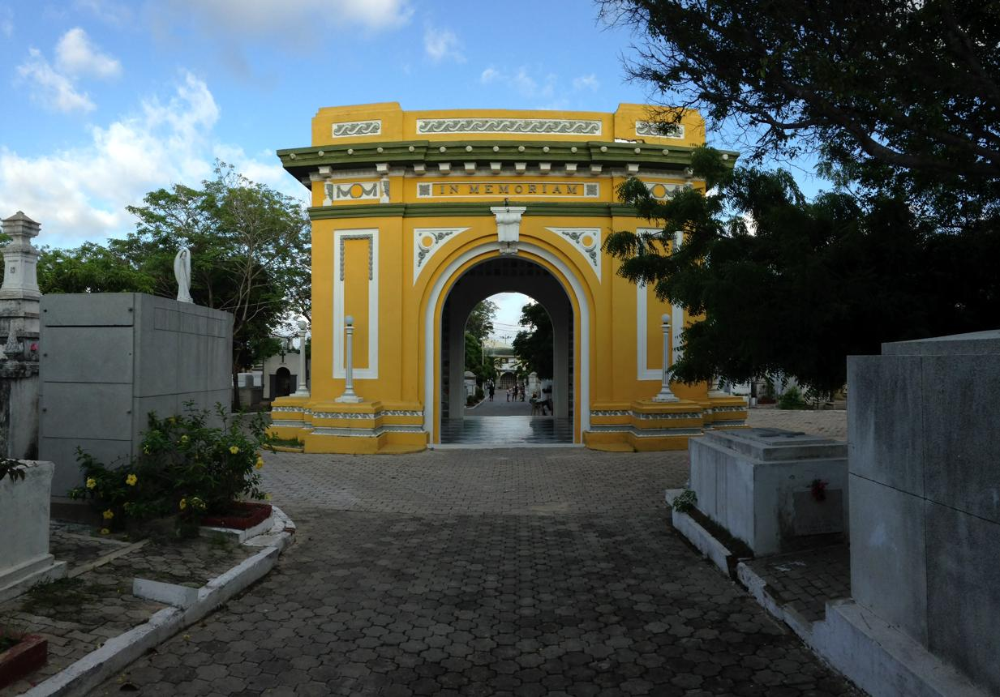

Cementerio Universal de Barranquilla
Lugares Misteriosos / Sitios históricos y paranormales

La historia
En el corazón de Barranquilla existe un lugar donde el tiempo parece detenerse entre antiguos mausoleos, esculturas de mármol y lápidas que conservan los nombres de generaciones pasadas. Se trata del Cementerio Universal, uno de los espacios funerarios más representativos de la historia de la ciudad y un escenario que guarda parte de la memoria de quienes contribuyeron a su desarrollo.
Sus orígenes se remontan a 1867, cuando se fundó la Sociedad Hermanos de la Caridad, organización que impulsó la construcción de un cementerio destinado a recibir a las personas sin distinción de religión, procedencia o creencias. El camposanto abrió sus puertas el 9 de abril de 1872 y se convirtió en un espacio significativo para una sociedad que comenzaba a experimentar importantes transformaciones culturales y sociales.
Una de las características más interesantes del cementerio es su diversidad arquitectónica. Sus pasillos albergan mausoleos, esculturas, monumentos y lápidas que reflejan diferentes estilos artísticos y épocas. Algunas de estas construcciones fueron elaboradas con materiales importados y muestran la influencia de las comunidades extranjeras, comerciantes y familias que participaron en el crecimiento de Barranquilla.
Más allá de su importancia histórica, el Cementerio Universal también despierta curiosidad por la atmósfera de sus antiguos monumentos y las historias que pueden surgir al recorrer sus silenciosos caminos. Como sucede con muchos cementerios tradicionales, estos espacios suelen estar rodeados de relatos sobre apariciones, presencias inexplicables y experiencias atribuidas a quienes los visitan. Sin embargo, estas historias forman parte del imaginario popular y no deben confundirse con hechos comprobados.
Hoy, el Cementerio Universal representa mucho más que un lugar de descanso. Es un testimonio de la diversidad cultural, las tradiciones funerarias y la evolución arquitectónica de Barranquilla. Sus monumentos conservan fragmentos de una historia que permanece presente entre sus calles y que invita a descubrir los recuerdos de una ciudad que también puede contarse a través de sus muertos.
Entre la memoria y el misterio
Cuando cae la noche, la imagen de sus esculturas, mausoleos y antiguas lápidas puede alimentar la imaginación de quienes sienten fascinación por los lugares cargados de historia. El silencio, las sombras y el paso del tiempo crean una atmósfera particular que convierte este camposanto en un escenario interesante para explorar la relación entre memoria, tradición y misterio en el Caribe colombiano.
Fuentes
Alcaldía de Barranquilla. (2025). Una cita con la historia y el arte funerario de Barranquilla: Ruta Patrimonial Cementerio Universal.
Consultar fuenteEl Tiempo. (2021). Barranquilla: mausoleos del cementerio Universal, atractivo turístico.
Consultar fuenteLópez García, J. Barranquilla, ciudad progresista construye un cementerio universal. Revista Epokhé, Universidad del Atlántico.
Consultar investigación